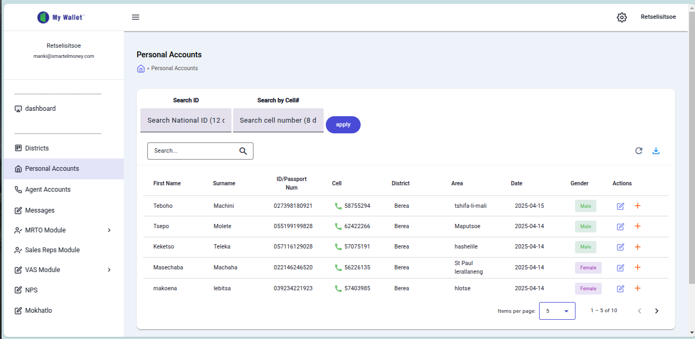

My Wallet Application - Personal Accounts Screen Documentation

This document describes the user interface elements visible in the provided screenshot of the "My Wallet" application, specifically the "Personal Accounts" section.
Top Bar Elements
- Logo and User Info: Displays the application name "My Wallet" and the currently logged-in user's email address (
retselistsoe@smartelmoney.com). - Sidebar Toggle: A hamburger menu icon (☰) used to collapse or expand the left-hand navigation sidebar.
- Settings Icon: A gear icon (⚙️), typically used to access application settings or configuration options.
- User Profile Area: Shows the logged-in user's name (Retselistsoe) and likely provides access to user profile settings, account management, or logout options.
Left Sidebar Navigation
- Dashboard: A navigation link to the main overview or dashboard section of the application.
- Districts: A navigation link to a section for viewing or managing geographical districts.
- Personal Accounts: A navigation link to the section for managing individual customer or personal accounts. This is the currently active section.
- Agent Accounts: A navigation link to a section for managing agent accounts.
- Messages: A navigation link to an internal messaging or communication feature.
- MRTO Module: A navigation link for functionalities related to the "MRTO" module.
- Sales Reps Module: A navigation link to a module related to sales representatives.
- VAS Module: A navigation link for "Value Added Services" functionalities.
- NPS: A navigation link, possibly related to Net Promoter Score tracking or a specific "NPS" module.
- Mokhatlo: A navigation link, likely a custom module or section (possibly a local term), for related features.
Main Content Area (Personal Accounts View)
- Page Title: The main heading identifying the current screen ("Personal Accounts").
- Breadcrumb Navigation: Shows the user's current location within the application hierarchy (
< Personal Accounts) and may allow navigation back to parent sections. - Search Tabs: Tabs allowing the user to select the primary search criterion: "Search ID" or "Search by Cell#".
- Search National ID Input: An input field specifically for searching accounts using a National ID number (expects 12 characters, e.g., "1,2 c").
- Search Cell Number Input: An input field specifically for searching accounts using a cell phone number (expects 8 digits, e.g., "8 d").
- Apply Button: A button to execute the search based on the criteria entered in the active search tab's input field.
- General Search Input: A text field with a search icon (🔍) for performing a general search across the data displayed in the table below.
- Refresh Button: An icon button (🔄) to reload or refresh the data displayed in the table.
- Export/Download Button: An icon button (📥) likely used to export the displayed data, potentially into formats like CSV or Excel.
- Data Table: The main component displaying a list of personal accounts in a tabular format.
- Table Headers: The titles for each column in the data table (First Name, Surname, ID/Passport Num, Cell, District, Area, Date, Gender, Actions).
- Data Rows: Individual rows representing specific personal accounts, displaying their details according to the columns.
- Action Buttons: Buttons within the "Actions" column for each row, used for operations like editing (✏️ icon) or deleting (🗑️ icon) the specific account record.
- Items Per Page Selector: A dropdown menu allowing the user to select the number of account records displayed per page (currently set to 5).
- Pagination Information: Text indicating the range of items currently displayed out of the total number of items (e.g., "1 - 5 of 10").
- Pagination Controls: Navigation arrows (< and >) to move to the previous or next page of account records when the total number exceeds the items displayed per page.